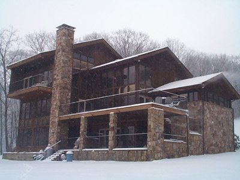
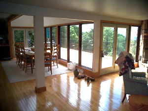

|
Home Inspection Commercial Inspection Structural Engineers

Staff:
Sam Sain, P. E., (Civil) Professional Engineer and Certified ASHI Inspector
Don Boggs, B.S. (Electrical)
Welcome and thank you for visiting our website. We are experienced residential and commercial real estate inspectors. We are unique in the business as we are all graduate engineers. Sam has masters in Civil Engineering from Carnegie-Mellon University. His doctoral work was in Civil Engineering with minor in Economics and Public Health. Sam's undergraduate degree is also in Civil Engineering with Architecture as minor. Don is Penn State graduate in Electrical Engineering. Being engineers, we can do more than a typical home inspector can do. We can do structural engineering. We can certify foundations. We can undertake environmental studies. We are trained and experienced in Commercial and Industrial inspections.
We do not provide litigation support. If you need that service, please call
Bruce Thomas at 724-836-0328 Office 724-396-9919 Cell.
Our references are in this webpage. Two engineers, Don and I, to inspect your
property together.
Beside residential inspection, large commercial inspections are our specialty. Commercial inspection requires teamwork with many professionals. We coordinate all the work under one umbrella.
We are computer savvy people. We are a good match for you, if you like to do everything through e-mails
or text (SMS), without too many phone calls.
We do not end our relationship after an inspection. We keep the line of communication open in case you need our help in the future, just ask our clients.
We will send an email or two a year to keep in touch.
Our inspections are from an engineering point of view.
Even before we arrive at your property for inspection, we already studied your property through USGS, Satellite Maps and Mine Maps (where available).
We report the condition of the physical components, structures and foundations. We recommend maintenance items and educate our buyers during an inspection. We keep in touch with you as long as you want to keep in touch with us. We will help you during your ownership of the property.
Home inspectors do not judge or evaluate the home for cost or value, but do report objectively in writing the specific condition of the subject home's condition and the subsequent physical systems involved.
A home inspection is an independent, unbiased review and report on a home's systems, components and their condition. Consumers and real estate professionals should expect no less than full professionalism, education, competence, credentials, knowledge, and courtesy.
A detailed home inspection usually takes two to three hours or longer, depending on the home's age and square footage. We recommend that you be present at your home inspection so that you can ask your inspector any questions and to look at any areas needing maintenance or repair.
Please take the time to look through our web site. We've included a wealth of information which will help you better understand the ins and outs of home inspection, and we hope this information will be useful to you.
Serving the following areas: Allegheny, Fayette, Greene, Somerset,
Washington, and Westmoreland Counties.
Bear Rocks, Connellsville, Greensburg, Hidden Valley, Irwin, Johnstown, Latrobe, Ligonier, Monroeville, Penn Hills, Pittsburgh, Seven Springs, Somerset,
Uniontown.

|